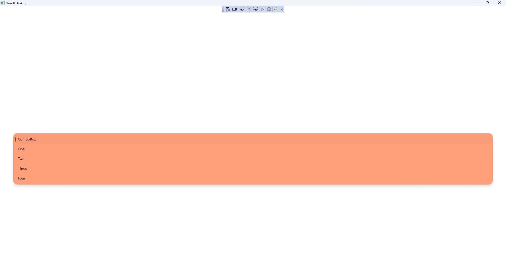

Custom ComboBox
Learn creating a Custom ComboBox using Windows App SDK with this Tutorial
Custom ComboBox shows how to create a Style for a ComboBox using Windows App SDK.
Step 1
Follow Setup and Start on how to get Setup and Install what you need for Visual Studio 2022 and Windows App SDK.


Step 2
Step 3
In the XAML for App.xaml below the Comment
of <!-- Other app resources here --> type in the following XAML
for the Style of CustomComboBox that will be used to target a ComboBox:
<Style x:Key="CustomComboBox" TargetType="ComboBox">
<!-- Setters -->
<Setter Property="Template">
<Setter.Value>
<ControlTemplate TargetType="ComboBox">
<Grid x:Name="LayoutRoot">
<Grid.Resources>
<!-- Resources -->
</Grid.Resources>
<Grid.ColumnDefinitions>
<ColumnDefinition Width="*"/>
<ColumnDefinition Width="32"/>
</Grid.ColumnDefinitions>
<Grid.RowDefinitions>
<RowDefinition Height="Auto"/>
<RowDefinition Height="*"/>
</Grid.RowDefinitions>
<VisualStateManager.VisualStateGroups>
<VisualStateGroup x:Name="CommonStates">
<!-- Visual State Normal, Pointer Over & Pressed -->
<!-- Visual State Disabled -->
</VisualStateGroup>
<VisualStateGroup x:Name="FocusStates">
<!-- Visual State Focused -->
<!-- Visual State Focused Pressed-->
<!-- Unfocused, Pointer Focused & Focused Drop Down -->
</VisualStateGroup>
<!-- Visual State Group Drop Down States -->
</VisualStateManager.VisualStateGroups>
<!-- Content -->
<!-- Popup -->
</Grid>
</ControlTemplate>
</Setter.Value>
</Setter>
</Style>
Step 4
While still the XAML for App.xaml below the Comment
of <!-- Setters --> type in the following XAML:
<Setter Property="Padding" Value="12,5,0,7"/>
<Setter Property="MinWidth" Value="{ThemeResource ComboBoxThemeMinWidth}"/>
<Setter Property="Foreground" Value="Gold"/>
<Setter Property="Background" Value="{ThemeResource ComboBoxBackground}"/>
<Setter Property="BorderBrush" Value="{ThemeResource ComboBoxBorderBrush}"/>
<Setter Property="BorderThickness"
Value="{ThemeResource ComboBoxBorderThemeThickness}"/>
<Setter Property="TabNavigation" Value="Once"/>
<Setter Property="ScrollViewer.HorizontalScrollBarVisibility" Value="Disabled"/>
<Setter Property="ScrollViewer.VerticalScrollBarVisibility" Value="Auto"/>
<Setter Property="ScrollViewer.HorizontalScrollMode" Value="Disabled"/>
<Setter Property="ScrollViewer.VerticalScrollMode" Value="Auto"/>
<Setter Property="ScrollViewer.IsVerticalRailEnabled" Value="True"/>
<Setter Property="ScrollViewer.IsDeferredScrollingEnabled" Value="False"/>
<Setter Property="ScrollViewer.BringIntoViewOnFocusChange" Value="True"/>
<Setter Property="HorizontalContentAlignment" Value="Stretch"/>
<Setter Property="HorizontalAlignment" Value="Left"/>
<Setter Property="VerticalAlignment" Value="Top"/>
<Setter Property="FontFamily"
Value="{ThemeResource ContentControlThemeFontFamily}"/>
<Setter Property="FontSize"
Value="{ThemeResource ControlContentThemeFontSize}"/>
<Setter Property="ItemsPanel">
<Setter.Value>
<ItemsPanelTemplate>
<CarouselPanel/>
</ItemsPanelTemplate>
</Setter.Value>
</Setter>
This XAML is for the Setters for the Properties
of the ComboBox used in the Custom ComboBox.
Step 5
While still the XAML for App.xaml below the Comment
of <!-- Resources --> type in the following XAML:
<Storyboard x:Key="OverlayOpeningAnimation">
<DoubleAnimationUsingKeyFrames
Storyboard.TargetProperty="Opacity">
<DiscreteDoubleKeyFrame
KeyTime="0:0:0" Value="0.0"/>
<SplineDoubleKeyFrame
KeySpline="0.1,0.9 0.2,1.0"
KeyTime="0:0:0.383" Value="1.0"/>
</DoubleAnimationUsingKeyFrames>
</Storyboard>
<Storyboard x:Key="OverlayClosingAnimation">
<DoubleAnimationUsingKeyFrames
Storyboard.TargetProperty="Opacity">
<DiscreteDoubleKeyFrame
KeyTime="0:0:0" Value="1.0"/>
<SplineDoubleKeyFrame
KeySpline="0.1,0.9 0.2,1.0"
KeyTime="0:0:0.216" Value="0.0"/>
</DoubleAnimationUsingKeyFrames>
</Storyboard>
This XAML is for the Resources for two sets of Storyboard for Animations
for the ComboBox used in the Custom ComboBox.
Step 6
While still the XAML for App.xaml below the Comment
of <!-- Visual State Normal, Pointer Over & Pressed --> type in the following XAML:
<VisualState x:Name="Normal"/>
<VisualState x:Name="PointerOver">
<Storyboard>
<ObjectAnimationUsingKeyFrames
Storyboard.TargetProperty="Background"
Storyboard.TargetName="Background">
<DiscreteObjectKeyFrame KeyTime="0"
Value="{ThemeResource ComboBoxBackgroundPointerOver}"/>
</ObjectAnimationUsingKeyFrames>
<ObjectAnimationUsingKeyFrames
Storyboard.TargetProperty="BorderBrush"
Storyboard.TargetName="Background">
<DiscreteObjectKeyFrame KeyTime="0" Value="GoldenRod"/>
</ObjectAnimationUsingKeyFrames>
</Storyboard>
</VisualState>
<VisualState x:Name="Pressed">
<Storyboard>
<ObjectAnimationUsingKeyFrames
Storyboard.TargetProperty="Background"
Storyboard.TargetName="Background">
<DiscreteObjectKeyFrame KeyTime="0"
Value="{ThemeResource ComboBoxBackgroundPressed}"/>
</ObjectAnimationUsingKeyFrames>
<ObjectAnimationUsingKeyFrames
Storyboard.TargetProperty="BorderBrush"
Storyboard.TargetName="Background">
<DiscreteObjectKeyFrame KeyTime="0"
Value="{ThemeResource ComboBoxBorderBrushPressed}"/>
</ObjectAnimationUsingKeyFrames>
</Storyboard>
</VisualState>
This XAML is for the Visual States that will represent the States
of Normal, PointerOver and Pressed for the ComboBox used in
the Custom ComboBox.
Step 7
While still the XAML for App.xaml below the Comment
of <!-- Visual State Disabled --> type in the following XAML:
<VisualState x:Name="Disabled">
<Storyboard>
<ObjectAnimationUsingKeyFrames
Storyboard.TargetProperty="Background"
Storyboard.TargetName="Background">
<DiscreteObjectKeyFrame KeyTime="0"
Value="{ThemeResource ComboBoxBackgroundDisabled}"/>
</ObjectAnimationUsingKeyFrames>
<ObjectAnimationUsingKeyFrames
Storyboard.TargetProperty="BorderBrush"
Storyboard.TargetName="Background">
<DiscreteObjectKeyFrame KeyTime="0"
Value="{ThemeResource ComboBoxBorderBrushDisabled}"/>
</ObjectAnimationUsingKeyFrames>
<ObjectAnimationUsingKeyFrames
Storyboard.TargetProperty="Foreground"
Storyboard.TargetName="HeaderContentPresenter">
<DiscreteObjectKeyFrame KeyTime="0"
Value="{ThemeResource ComboBoxForegroundDisabled}"/>
</ObjectAnimationUsingKeyFrames>
<ObjectAnimationUsingKeyFrames
Storyboard.TargetProperty="Foreground"
Storyboard.TargetName="ContentPresenter">
<DiscreteObjectKeyFrame KeyTime="0"
Value="{ThemeResource ComboBoxForegroundDisabled}"/>
</ObjectAnimationUsingKeyFrames>
<ObjectAnimationUsingKeyFrames
Storyboard.TargetProperty="Foreground"
Storyboard.TargetName="PlaceholderTextBlock">
<DiscreteObjectKeyFrame KeyTime="0"
Value="{ThemeResource ComboBoxForegroundDisabled}"/>
</ObjectAnimationUsingKeyFrames>
<ObjectAnimationUsingKeyFrames
Storyboard.TargetProperty="Foreground"
Storyboard.TargetName="DropDownGlyph">
<DiscreteObjectKeyFrame KeyTime="0"
Value="{ThemeResource ComboBoxDropDownGlyphForegroundDisabled}"/>
</ObjectAnimationUsingKeyFrames>
</Storyboard>
</VisualState>
This XAML is for the Visual State that will represent the State
of Disabled for the ComboBox used in the Custom ComboBox.
Step 8
While still the XAML for App.xaml below the Comment
of <!-- Visual State Focused --> type in the following XAML:
<VisualState x:Name="Focused">
<Storyboard>
<DoubleAnimation Duration="0" To="1"
Storyboard.TargetProperty="Opacity"
Storyboard.TargetName="HighlightBackground"/>
<ObjectAnimationUsingKeyFrames
Storyboard.TargetProperty="BorderBrush"
Storyboard.TargetName="HighlightBackground">
<DiscreteObjectKeyFrame KeyTime="0"
Value="{ThemeResource ComboBoxBackgroundBorderBrushFocused}"/>
</ObjectAnimationUsingKeyFrames>
<ObjectAnimationUsingKeyFrames
Storyboard.TargetProperty="Foreground"
Storyboard.TargetName="ContentPresenter">
<DiscreteObjectKeyFrame KeyTime="0"
Value="{ThemeResource ComboBoxForegroundFocused}"/>
</ObjectAnimationUsingKeyFrames>
<ObjectAnimationUsingKeyFrames
Storyboard.TargetProperty="Foreground"
Storyboard.TargetName="PlaceholderTextBlock">
<DiscreteObjectKeyFrame KeyTime="0"
Value="{ThemeResource ComboBoxForegroundFocused}"/>
</ObjectAnimationUsingKeyFrames>
<ObjectAnimationUsingKeyFrames
Storyboard.TargetProperty="Foreground"
Storyboard.TargetName="DropDownGlyph">
<DiscreteObjectKeyFrame KeyTime="0"
Value="{ThemeResource ComboBoxDropDownGlyphForegroundFocused}"/>
</ObjectAnimationUsingKeyFrames>
</Storyboard>
</VisualState>
This XAML is for the Visual State that will represent the State
of Focused for the ComboBox used in the Custom ComboBox.
Step 9
While still the XAML for App.xaml below the Comment
of <!-- Visual State Focused Pressed --> type in the following XAML:
<VisualState x:Name="FocusedPressed">
<Storyboard>
<DoubleAnimation Duration="0" To="1"
Storyboard.TargetProperty="Opacity"
Storyboard.TargetName="HighlightBackground"/>
<ObjectAnimationUsingKeyFrames
Storyboard.TargetProperty="Foreground"
Storyboard.TargetName="ContentPresenter">
<DiscreteObjectKeyFrame KeyTime="0"
Value="{ThemeResource ComboBoxForegroundFocusedPressed}"/>
</ObjectAnimationUsingKeyFrames>
<ObjectAnimationUsingKeyFrames
Storyboard.TargetProperty="Foreground"
Storyboard.TargetName="PlaceholderTextBlock">
<DiscreteObjectKeyFrame KeyTime="0"
Value="{ThemeResource ComboBoxPlaceHolderForegroundFocusedPressed}"/>
</ObjectAnimationUsingKeyFrames>
<ObjectAnimationUsingKeyFrames
Storyboard.TargetProperty="Foreground"
Storyboard.TargetName="DropDownGlyph">
<DiscreteObjectKeyFrame KeyTime="0"
Value="{ThemeResource ComboBoxDropDownGlyphForegroundFocusedPressed}"/>
</ObjectAnimationUsingKeyFrames>
</Storyboard>
</VisualState>
This XAML is for the Visual State that will represent the State
of FocusedPressed for the ComboBox used in the Custom ComboBox.
Step 10
While still the XAML for App.xaml below the Comment
of <!-- Unfocused, Pointer Focused & Focused Drop Down --> type in the following XAML:
<VisualState x:Name="Unfocused"/>
<VisualState x:Name="PointerFocused"/>
<VisualState x:Name="FocusedDropDown">
<Storyboard>
<ObjectAnimationUsingKeyFrames Duration="0"
Storyboard.TargetProperty="Visibility"
Storyboard.TargetName="PopupBorder">
<DiscreteObjectKeyFrame KeyTime="0">
<DiscreteObjectKeyFrame.Value>
<Visibility>Visible</Visibility>
</DiscreteObjectKeyFrame.Value>
</DiscreteObjectKeyFrame>
</ObjectAnimationUsingKeyFrames>
</Storyboard>
</VisualState>
This XAML is for the Visual States that will represent the States
of Unfocused, PointerFocused and FocusedDropDown for the ComboBox
used in the Custom ComboBox.
Step 11
While still the XAML for App.xaml below the Comment
of <!-- Visual State Group Drop Down States --> type in the following XAML:
<VisualStateGroup x:Name="DropDownStates">
<VisualState x:Name="Opened">
<Storyboard>
<SplitOpenThemeAnimation ClosedTargetName="ContentPresenter"
OffsetFromCenter="{Binding TemplateSettings.DropDownOffset,
RelativeSource={RelativeSource Mode=TemplatedParent}}"
OpenedTargetName="PopupBorder"
OpenedLength="{Binding TemplateSettings.DropDownOpenedHeight,
RelativeSource={RelativeSource Mode=TemplatedParent}}"/>
</Storyboard>
</VisualState>
<VisualState x:Name="Closed">
<Storyboard>
<SplitCloseThemeAnimation
ClosedTargetName="ContentPresenter"
OffsetFromCenter="{Binding TemplateSettings.DropDownOffset,
RelativeSource={RelativeSource Mode=TemplatedParent}}"
OpenedTargetName="PopupBorder"
OpenedLength="{Binding TemplateSettings.DropDownOpenedHeight,
RelativeSource={RelativeSource Mode=TemplatedParent}}"/>
</Storyboard>
</VisualState>
</VisualStateGroup>
This XAML is for the Visual State Group that will represent the Drop Down States
of Open and Closed for the ComboBox used in the Custom ComboBox.
Step 12
Then in the XAML for App.xaml below the Comment
of <!-- Content --> type in the following XAML:
<Border x:Name="Background" Grid.ColumnSpan="2"
Grid.Row="1" BorderBrush="Salmon" Background="LightSalmon"
BorderThickness="{TemplateBinding BorderThickness}" CornerRadius="15"/>
<Border x:Name="HighlightBackground" Grid.ColumnSpan="2" Grid.Row="1"
BorderBrush="Gold" BorderThickness="{TemplateBinding BorderThickness}"
Background="{ThemeResource ComboBoxBackgroundUnfocused}"
Opacity="0" CornerRadius="15"/>
<ContentPresenter x:Name="ContentPresenter" Grid.Row="1"
HorizontalAlignment="{TemplateBinding HorizontalContentAlignment}"
Margin="{TemplateBinding Padding}" CornerRadius="15"
VerticalAlignment="{TemplateBinding VerticalContentAlignment}">
<TextBlock x:Name="PlaceholderTextBlock"
Foreground="{ThemeResource ComboBoxPlaceHolderForeground}"
Text="{TemplateBinding PlaceholderText}"/>
</ContentPresenter>
<FontIcon x:Name="DropDownGlyph" Grid.Column="1" Grid.Row="1"
AutomationProperties.AccessibilityView="Raw" Foreground="Gold"
FontSize="12" FontFamily="{ThemeResource SymbolThemeFontFamily}"
Glyph="" HorizontalAlignment="Right" IsHitTestVisible="False"
Margin="0,10,10,10" VerticalAlignment="Center"/>
This XAML is the Content for the layout of a ComboBox when the Style is applied for the Custom ComboBox.
Step 13
Then in the XAML for App.xaml below the Comment
of <!-- Popup --> type in the following XAML:
<Popup x:Name="Popup">
<Border x:Name="PopupBorder" BorderBrush="Salmon"
BorderThickness="{ThemeResource ComboBoxDropdownBorderThickness}"
Background="LightSalmon" HorizontalAlignment="Stretch"
Margin="0,-1,0,-1" CornerRadius="15">
<ScrollViewer x:Name="ScrollViewer"
AutomationProperties.AccessibilityView="Raw"
BringIntoViewOnFocusChange="{TemplateBinding
ScrollViewer.BringIntoViewOnFocusChange}"
Foreground="{ThemeResource ComboBoxDropDownForeground}"
HorizontalScrollMode="{TemplateBinding
ScrollViewer.HorizontalScrollMode}"
HorizontalScrollBarVisibility="{TemplateBinding
ScrollViewer.HorizontalScrollBarVisibility}"
IsHorizontalRailEnabled="{TemplateBinding
ScrollViewer.IsHorizontalRailEnabled}"
IsVerticalRailEnabled="{TemplateBinding
ScrollViewer.IsVerticalRailEnabled}"
IsDeferredScrollingEnabled="{TemplateBinding
ScrollViewer.IsDeferredScrollingEnabled}"
MinWidth="{Binding TemplateSettings.DropDownContentMinWidth,
RelativeSource={RelativeSource Mode=TemplatedParent}}"
VerticalSnapPointsType="OptionalSingle" ZoomMode="Disabled"
VerticalScrollBarVisibility="{TemplateBinding
ScrollViewer.VerticalScrollBarVisibility}"
VerticalScrollMode="{TemplateBinding
ScrollViewer.VerticalScrollMode}"
VerticalSnapPointsAlignment="Near">
<ItemsPresenter Margin="{ThemeResource ComboBoxDropdownContentMargin}"/>
</ScrollViewer>
</Border>
</Popup>
This XAML is the Popup used for the ComboBox when the Style is applied for the Custom ComboBox.
Step 14
Step 15
In the XAML for MainWindow.xaml there will be some XAML for a StackPanel, this should be Removed:
<StackPanel Orientation="Horizontal"
HorizontalAlignment="Center" VerticalAlignment="Center">
<Button x:Name="myButton" Click="myButton_Click">Click Me</Button>
</StackPanel>
Step 16
While still in the XAML for MainWindow.xaml above </Window>, type in the following XAML:
<ComboBox Margin="50" SelectedIndex="0"
HorizontalAlignment="Stretch"
VerticalAlignment="Center"
Style="{StaticResource CustomComboBox}">
<ComboBoxItem Content="ComboBox"/>
<ComboBoxItem Content="One"/>
<ComboBoxItem Content="Two"/>
<ComboBoxItem Content="Three"/>
<ComboBoxItem Content="Four"/>
</ComboBox>
This XAML contains a ComboBox with Style set to the
StaticResource of CustomComboBox from App.xaml.
Step 17

Step 18
In the Code for MainWindow.xaml.cs there be a Method of myButton_Click(...) this should be Removed by removing the following:
private void myButton_Click(object sender, RoutedEventArgs e)
{
myButton.Content = "Clicked";
}
Step 19
Step 20
Once running you will see the Custom ComboBox displayed which you can Select to see the Options.

Step 21